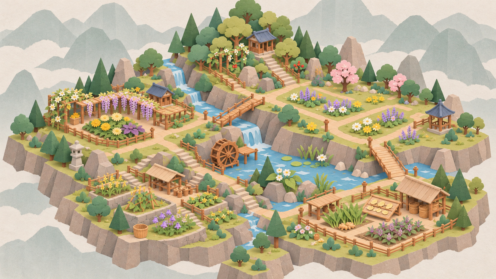

HERBAL VALLEYCASE NO. 01
Master's Casebook
师门医案
Symptoms 症状线索
Master's Note 师傅手记
医案

The two lost pages hold three clues. Find the herbs in the valley, collect them in your basket, and bring them to the brewing pot.
隐藏挑战 · 虚构的游戏配方，并非真实药方。